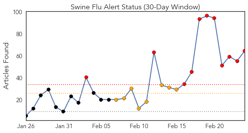
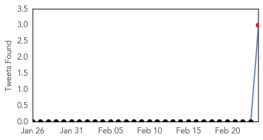
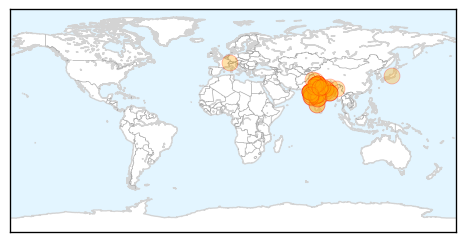
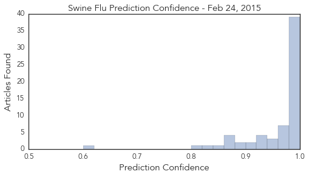

Swine Flu
30-Day Web Trend
11 alerts, 8 warnings

30-Day Twitter Trend
1 alerts, 0 warnings

Article Locations
Article Confidences
Top Articles:
- 1.000
- Swine flu: Will assure all help to state governments, says JP Nadda
- 1.000
- Three cases test positive for swine flu
- 1.000
- Gujarat junior health minister tests positive for swine flu
- 1.000
- Indian City Bans Gatherings Over Swine Flu Outbreak
- 0.999
- 21 more deaths take swine flu death toll to 833
- 0.999
- Minister for health being treated at a special isolation room created at his residence: Gujarat
- 0.999
- India's Ahmedabad bans gatherings over swine flu outbreak, South Asia News & Top Stories
- 0.999
- State takes extra precautionary steps towards swine flu
- 0.999
- 214 Swine Flu Deaths In Rajasthan Alone
- 0.999
- 841 deaths due to swine flu, matter of great concern
- 0.999
- Swine flu toll rises to 841 in less than 2 months
- 0.999
- Indian city bans gatherings over swine flu outbreak
- 0.999
- Indian city bans gatherings over swine flu outbreak
- 0.999
- Here’s how you can manage Swine flu in Bengaluru: Akshatha M
- 0.998
- JP Nadda to make statement in Parliament on swine flu
- 0.998
- Indiablooms - First Portal on Digital News Management
- 0.997
- Flu rap on four big hospitals
- 0.997
- Nine fresh cases of swine flu in Telangana
- 0.997
- One death and record 66 new cases of swine flu in city
- 0.996
- Nine fresh cases of swine flu in Telangana
- 0.996
- Swine flu claims one more life, death toll reaches 100 in state
- 0.995
- Mamata wants swine flu test lab in Kolkata, Dooars
- 0.994
- J&K witnesses huge number of positive cases of swine flu
- 0.993
- Swine flu in Ahmedabad: Government bans people from gathering in large groups
- 0.993
- Health desks set up at border points
- 0.993
- No H1N1 vaccinations for Vashi civic hospital staffers yet
- 0.992
- Doctor admitted in critical condition, swine flu suspected
- 0.992
- State under watch for swine flu
- 0.992
- Mirwaiz castigates state health department
- 0.991
- Six more swine flu victims die in MP, toll reaches over 123
- 0.989
- Swine flu cases rise to 34 in Ghaziabad
- 0.988
- No swine flu death reported in Maharashtra on Monday
- 0.985
- No need to vaccinate people against swine flu: Nadda
- 0.985
- Focus on sequencing of swine flu virus: immunology expert
- 0.984
- Govt show-causes pvt hospitals for refusing treatment
- 0.981
- No need to vaccinate people against swine flu: Nadda
- 0.981
- No need to vaccinate people against swine flu: Nadda
- 0.981
- No need to vaccinate people against swine flu: Nadda
- 0.981
- No need to vaccinate people against swine flu: Nadda
- 0.979
- Swine flu death toll reaches 51
- 0.977
- 350 swine flu cases in UP, death toll mounts to 10
- 0.972
- 4 more die of swine flu in Maha, toll climbs to 103
- 0.969
- Third swine flu case confirmed in Nagaland
- 0.968
- 841 deaths due to swine flu, matter of great concern: Govt
- 0.965
- Senior doctor admitted for suspected swine flu
- 0.961
- Expert urges India to sequence swine flu virus
- 0.958
- Swine flu: No need to vaccinate people against the disease, says Health Minister J P Nadda
- 0.954
- Sequence H1N1 virus in India: expert
- 0.952
- No cause for swine flu panic, says Bengal government
- 0.939
- 11 new cases of swine flu detected in WB
Showing top 50 articles...
Top Tweets:
- 0.732
- RT: Porbandar LionsClub (India) distributed swine flu medication and boiling water http://t.co/ju3PdpobNZ
- 0.693
- RT: 21 more die of swine flu, toll reaches 833 http://t.co/eg8EpgQTFL
- 0.537
- Killer swine flu strikes India http://t.co/ufWCXspCdM
Unknown
30-Day Web Trend
1 alerts, 0 warnings

30-Day Twitter Trend
0 alerts, 0 warnings

Article Locations

Article Confidences

Top Articles:
- 0.997
- Riyadh hospital closed for ignoring MERS guidelines
- 0.996
- the edge of knowledge
- 0.993
- MERS-CoV: UN warns of ‘critical knowledge gaps’
- 0.991
- WHO calls for action over Mers virus - Panorama
- 0.991
- Govt intensifies fight against Tyhpoid as more cases reported
- 0.985
- Chiayi gov't reports 3 new norovirus cases
- 0.973
- Hartland facility dealing with norovirus outbreak
- 0.943
- CDC Says New Tick-Borne Virus May Have Killed Kansas Man
- 0.940
- Who's sterilizing your surgical instruments; superbug on the rise in hospitals
- 0.922
- Moses Cone working to keep superbug from spreading to Piedmont
- 0.917
- Chicago Tribune
- 0.917
- Chicago Tribune
- 0.917
- Chicago Tribune
- 0.917
- Chicago Tribune
- 0.917
- Chicago Tribune
- 0.917
- Chicago Tribune
- 0.917
- Chicago Tribune
- 0.917
- Chicago Tribune
- 0.917
- Chicago Tribune
- 0.917
- Chicago Tribune
- 0.917
- Chicago Tribune
- 0.917
- Chicago Tribune
- 0.917
- Chicago Tribune
- 0.917
- Chicago Tribune
- 0.917
- Chicago Tribune
- 0.917
- Chicago Tribune
- 0.917
- Chicago Tribune
- 0.917
- Chicago Tribune
- 0.917
- Chicago Tribune
- 0.917
- Chicago Tribune
- 0.917
- Chicago Tribune
- 0.917
- Chicago Tribune
- 0.917
- Chicago Tribune
- 0.917
- Chicago Tribune
- 0.917
- Chicago Tribune
- 0.910
- The world windows to Thailand
- 0.900
- Suspected norovirus outbreak sickens 120 people in Taiwan
- 0.882
- California Lawmaker Requesting Congressional Hearing On Superbug Outbreak
- 0.868
- U.S. lawmaker seeks congressional hearing on 'superbug' outbreak – MassDevice
- 0.864
- REFILE-U.S. lawmaker seeks congressional hearing on 'superbug' outbreak
- 0.841
- Mysterious ‘Superbug’ Resistant To Antibiotics Has Resulted In 2 Deaths In North Carolina
- 0.799
- Pinamungajan typhoid outbreak, water source tested positive of coliform
- 0.791
- Mystery disease turns out to be malaria
- 0.753
- Superbug cases reported in North Carolina; 1 dead
- 0.750
- A Doctor's Advice, a Patient's Race Influence Flu Shot Rates
- 0.736
- First tests clear 100 of TB at childcare centre
- 0.732
- Superbug cases reported in North Carolina; 1 dead
- 0.722
- Studies linking fluoride in water to health issues prompt Australian review
- 0.714
- Charlotte man says superbug killed mom more than 1 year ago
- 0.693
- Samples taken from two kids sent to Lucknow for polio tests
Showing top 50 articles...
Top Tweets:
- 0.601
- RT: FLU SCAN: H7N9 infections in China, more H5N1 cases in Egypt, global flu update http://t.co/aiQEev5Eq4
- 0.546
- RT: So corona virus MERS is getting serious ... MOH ( ministry of health ) just send me an SMS .. http://t.co/snBz0mXpps